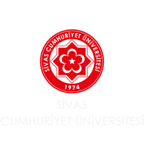

🏛️
100. Yıl Kültür Merkezi
470 kişilik çok amaçlı salon. Konser, tiyatro, konferans, sempozyum için kullanılır. Sergi salonu, kokteyl salonu, protokol salonu, kulis ve mutfak bulunur. 1999'da hizmete açılmıştır.
👥 470 Kişi KapasiteliSivas Cumhuriyet Üniversitesi Etkinlik Portalı
Bu portal, Sivas Cumhuriyet Üniversitesi bünyesinde düzenlenen kültürel, sanatsal, bilimsel ve sportif etkinlikleri tek bir platformda bir araya getirmeyi amaçlamaktadır.
Öğrencilerimiz, akademik kadromuz ve personelimiz kampüsteki tüm etkinliklere kolayca ulaşabilir, detaylarını inceleyebilir ve katılım sağlayabilir. Portalımız sayesinde hiçbir etkinliği kaçırmadan kampüs hayatının canlı ritmine ayak uydurabilirsiniz.
Kampüs etkinliklerini dijital ortamda erişilebilir kılarak öğrenci katılımını artırmak ve üniversitenin sosyal-kültürel hayatını zenginleştirmek.
Türkiye'deki üniversiteler arasında en aktif ve erişilebilir etkinlik platformuna sahip kampüs olmak.

„Gelenekten Geleceğe"
Sivas Cumhuriyet Üniversitesi, 1974 yılında kurulmuş köklü bir devlet üniversitesidir. Merkez Kampüs, Sivas şehir merkezine yaklaşık 5 km uzaklıkta bulunmaktadır.
Bünyesinde 18 fakülte ve 15 meslek yüksekokulu barındıran üniversitemiz, 50.000'i aşkın öğrencisi ile Türkiye'nin önde gelen eğitim kurumlarından biridir.
Kampüs içinde kütüphane, kafeler, restoranlar, yurtlar, market, sağlık ocağı, spor salonu, yarı olimpik yüzme havuzu, tenis kortları, futbol sahaları ve Hasbahçe Göleti gibi pek çok sosyal alan bulunmaktadır. 100'ün üzerinde öğrenci kulübü ve topluluğu ile kampüs yaşamı her zaman canlı ve hareketlidir.
Etkinliklerimizin düzenlendiği başlıca kampüs mekanları
470 kişilik çok amaçlı salon. Konser, tiyatro, konferans, sempozyum için kullanılır. Sergi salonu, kokteyl salonu, protokol salonu, kulis ve mutfak bulunur. 1999'da hizmete açılmıştır.
👥 470 Kişi Kapasiteli1978'den beri hizmet veren kapalı spor salonu. Basketbol, voleybol, hentbol, futsal, masa tenisi ve tırmanma duvarı bulunur.
⚽ Çok Amaçlı Spor170.000'i aşkın basılı kitap, 4 milyon e-kitap, bilgisayarlı çalışma laboratuvarı ve okuma salonları ile akademik yaşamın kalbi.
📖 170.000+ KitapAçık hava etkinlikleri, festivaller ve mezuniyet törenleri için geniş alan. Kampüsün kalbi ve sosyal buluşma noktası.
🌳 Açık AlanSeminer ve konferanslar için orta ölçekli salon. Modern projeksiyon sistemi ve konforlu oturma düzeni.
👥 200 Kişi KapasiteliTıbbi seminerler ve söyleşiler için kullanılan amfi. Geniş oturma düzeni ve profesyonel sunum altyapısı.
👥 250 Kişi KapasiteliBölüm: Bilgisayar Mühendisliği, Sivas Cumhuriyet Üniversitesi
Dönem: 2025-2026 Bahar Dönemi
Bu proje, üniversite dersi kapsamında hazırlanmıştır. Tüm veriler örnek amaçlıdır.